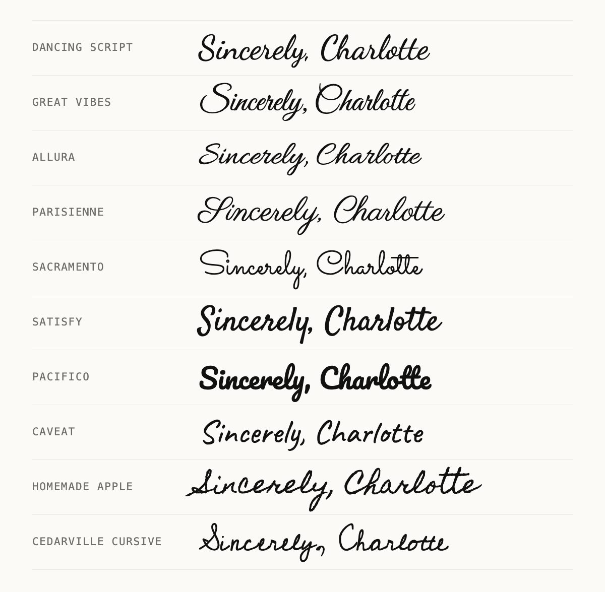

A cursive generator is for places with no font menu — Instagram bios, TikTok captions, Discord messages. Documents are the opposite. Google Docs, Word and Canva all let you choose a typeface, and a real cursive font will always look better there than pasted Unicode characters: it joins letters the way handwriting does, prints sharply, can be spell-checked and searched, and is read correctly by screen readers.
Here is where to find cursive fonts in each app, which ones are worth using, and the cases where the generator is still the right tool.
Cursive fonts in Google Docs
Docs shows a short list of fonts by default, and none of them is cursive. The rest are one menu away:
- Click the font name in the toolbar — it usually says Arial.
- Choose More fonts at the top of the list.
- Open the Show menu and pick Handwriting, or type a font name into the search box.
- Click each font you want so it is selected, then press OK. It now appears in your font list in every document.
These come from the Google Fonts library. The cursive ones worth knowing:

| Font | Feel | Good for |
|---|---|---|
| Dancing Script | Lively and casual, letters joined | Headings, cards, invitations |
| Great Vibes | Formal and flowing | Wedding invitations, certificates |
| Allura | Classic calligraphy, a little lighter | Invitations, place cards |
| Parisienne | Elegant French script | Menus, labels |
| Sacramento | Thin, single-weight line | Large headings only |
| Satisfy | Friendly brush script | Greetings, posters |
| Pacifico | Chunky retro brush | Playful titles |
| Caveat | Quick, natural handwriting | Notes, annotations, worksheets |
| Homemade Apple | Realistic pen handwriting | Personal notes, a handwritten look |
| Cedarville Cursive | Schoolroom cursive | Handwriting practice sheets |
Cursive fonts in Microsoft Word
Word uses the fonts installed on your computer. Select your text, click into the font box on the Home tab and start typing a name — Word jumps straight to it. These cursive fonts come with Windows, Microsoft Office or macOS:
| Font | Comes with | Feel |
|---|---|---|
| Segoe Script | Windows | Upright, friendly handwriting |
| Lucida Handwriting | Microsoft Office | Casual, wide and very legible |
| Monotype Corsiva | Microsoft Office | Calligraphic italic, easy to read at length |
| Edwardian Script ITC | Microsoft Office | Very formal, fine strokes |
| Vladimir Script | Microsoft Office | Formal, with generous swashes |
| Brush Script MT | Microsoft Office, macOS | Bold, fast brush lettering |
| Snell Roundhand | macOS | Classic copperplate |
| Apple Chancery | macOS | Calligraphic, with a medieval lean |
| Zapfino | macOS | Elaborate calligraphy — give it room |
Exactly which of these you have depends on your version of Windows or Office; if a name does not appear in the list, it is not installed. To use one of the Google fonts above in Word, download it from Google Fonts, open the file and choose Install, then restart Word. A document set in an installed font only looks right on computers that have the same font, so export it to PDF before you send it.
Cursive fonts in Canva
Canva has its own font library. Select a text box, click the font name in the toolbar and search for script, cursive or handwriting to browse, or type a font's name. Many of the Google fonts above are in Canva too — Great Vibes, Dancing Script, Allura, Sacramento and Pacifico among them — so the lettering can match across a document and a design. Fonts marked with a crown need a paid Canva plan.
How to use a cursive font so people can read it
- Big and brief. Script fonts are for headings, names and short phrases. A paragraph of cursive is tiring to read, so set body text in a plain font.
- Never all capitals. Cursive capitals are built to start a word, not to stand side by side. A line of them turns into a tangle.
- Pair it with something quiet. One script font plus one plain serif or sans-serif is enough for almost any invitation or poster.
- Check it printed. Hairline scripts such as Great Vibes and Sacramento can lose their thin strokes at small sizes or on a basic printer.
- Teach with a school hand. For handwriting practice, use a school-style font such as Cedarville Cursive. Decorative scripts model letterforms children are not taught.
When the cursive generator is the better tool
A font stays inside the file that uses it. Copy a heading set in Great Vibes out of Google Docs, paste it into an Instagram caption, and it arrives as plain letters — Instagram has no Great Vibes, and no font menu at all. That is the job the cursive text generator does: it replaces the letters themselves with Unicode script characters, which keep their shape wherever plain text goes.
| You want cursive in | Use |
|---|---|
| A Google Doc, Word file or Canva design | A cursive font |
| A printed invitation, poster or label | A cursive font, exported to PDF |
| An Instagram or TikTok bio, caption or comment | The cursive generator |
| A Discord message, X post or WhatsApp chat | The cursive generator |
| A playlist name, a file name or anything else without a font menu | The cursive generator |
| A logo, a Cricut project or a tattoo | An installed font |
Pasting generator text into a document does work, but you lose most of what makes a font good: the letters do not join, spell check flags every word, search inside the document cannot find them, and screen readers struggle. Use each tool where it belongs. If you are curious why the two behave so differently, how a cursive generator works explains the difference between a font and a character.